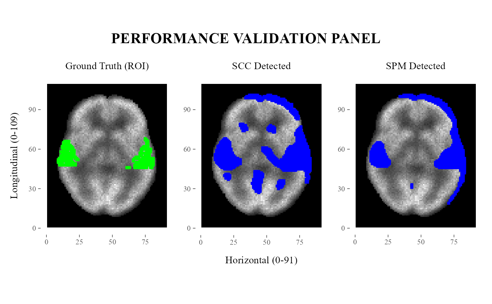

Plot ROI, SCC detections, and SPM detections for validation
Source:R/plotValidationPanel.R
plotValidationPanel.RdThis function visualizes the ground-truth ROI, SCC-detected points, and SPM-detected points as a three-panel comparison over a shared neuroimaging background.
Usage
plotValidationPanel(
template,
backgroundMatrix,
roiPoints,
sccPoints,
spmPoints,
title = "COMPARISON PANEL",
label1 = "True ROI",
label2 = "SCC Detected",
label3 = "SPM Detected"
)Arguments
- template
character, path to a NIfTI file used to obtain the grid dimensions of the imaging domain.- backgroundMatrix
A numeric matrix used to generate the grayscale background image.
- roiPoints
A
data.framewith columnsxandycontaining the ground-truth ROI points.- sccPoints
A list containing
positivePointsandnegativePoints, each as adata.framewith columnsxandy.- spmPoints
A
data.framewith columnsxandycontaining the SPM-detected points.- title
character, title shown above the panel.- label1
character, title of the ground-truth ROI panel.- label2
character, title of the SCC-detected panel.- label3
character, title of the SPM-detected panel.
Value
A patchwork/ggplot object containing three aligned panels:
ground-truth ROI,
SCC-detected points,
SPM-detected points.
Details
The three panels share the same grayscale background to facilitate visual comparison between the true ROI and the points detected by SCC and SPM.
In the examples, SCC detections are restricted to positive points only
to keep the visualization simple. With real analysis outputs,
sccPoints would typically be supplied directly as
getPoints(<SCC object>).
See also
SCCcomp for the example SCC object used in the examples. getPoints for extraction of SCC-detected significant points. getSPMbinary for extraction of SPM-detected significant points. processROIs for extraction of ground-truth ROI points.
Examples
# \donttest{
paramZ <- 35
controlPattern <- "^syntheticControl.*\\.nii\\.gz$"
databaseCN <- databaseCreator(pattern = controlPattern, control = TRUE, quiet = TRUE)
matrixCN <- matrixCreator(database = databaseCN, paramZ = paramZ, quiet = TRUE)
matrixCN <- meanNormalization(matrixCN)
#>
#> Mean before normalization: 4.345851
#>
#> Normalization completed.
roiFile <- system.file("extdata", "ROIsample_Region2_18.nii.gz", package = "neuroSCC")
truePoints <- processROIs(roiFile, region = "Region2", number = "18", save = FALSE)
#> Loading NIfTI file...
roiPoints <- subset(truePoints, z == paramZ & pet == 1, select = c("x", "y"))
spmFile <- system.file("extdata", "binary.nii.gz", package = "neuroSCC")
spmPoints <- getSPMbinary(spmFile, paramZ = paramZ)
data("SCCcomp", package = "neuroSCC")
plotValidationPanel(
template = roiFile,
backgroundMatrix = matrixCN,
roiPoints = roiPoints,
sccPoints = list(
positivePoints = getPoints(SCCcomp)$positivePoints,
negativePoints = data.frame(x = numeric(0), y = numeric(0))
),
spmPoints = spmPoints,
title = "Performance Validation Panel",
label1 = "Ground Truth (ROI)",
label2 = "SCC Detected",
label3 = "SPM Detected"
)

# }